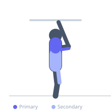
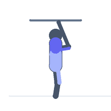

Exercise guide / Ring Dip to L-Sit Transition
Ring Dip to L-Sit Transition
An expert-level gymnastic combination movement that links a full ring dip directly into an L-sit hold at the top. The dip phase heavily loads the pectoralis major, anterior deltoid, and triceps, while the subsequent L-sit isometric demands intense hip flexor and rectus abdominis activation to hold the legs parallel to the ground. This movement develops both upper body pressing strength and core compression simultaneously.
Primary muscles
pectoralis major sternal
deltoid anterior
triceps long head
Secondary muscles
triceps lateral head
iliacus
psoas major
rectus abdominis
Stabilizers
infraspinatus
supraspinatus
pectoralis minor
Equipment
Gymnastic Rings


Starting position
- Support yourself on gymnastic rings with arms fully extended, rings turned out. Body hangs in a straight line below.
Setup
- Set rings high enough that the legs will clear the floor when in the L-sit position. Rings should be approximately head height when standing.
Steps
- Step 1: Begin with arms extended on rings (top of dip position, rings turned out if possible).
- Step 2: Bend the elbows and lower the body until the upper arms are parallel to the ground (full dip depth).
- Step 3: Press powerfully back to the top position, fully extending the arms.
- Step 4: At the top, immediately compress the hip flexors and abs to lift both legs straight in front of you to hip height, holding the L-sit for 2–3 seconds.
- Step 5: Lower legs and descend into the next dip. Repeat.
Coaching cues
- Press the rings apart slightly at the top — this helps initiate the L-sit
- Legs stay locked out in the L-sit — squeeze quads, point toes
Breathing
- Inhale on the dip descent, exhale on the press upward, hold breath briefly during L-sit contraction.
Range of motion
- Full dip depth (upper arm parallel to ground) and full L-sit (legs straight, parallel to floor).
Tempo
- 3-0-1-3 (3s dip descent, 1s press, 3s L-sit hold)
Common mistakes
- Reaching for the L-sit before fully locking out the arms
- Allowing rings to wobble during the transition
- Bent knees in the L-sit — legs must be straight for full difficulty
Safety
- Requires strong ring dips and standalone L-sit ability as prerequisites
- Do not attempt if shoulder stability is insufficient for ring dips
- Ensure rings are high enough to prevent legs contacting the floor
Training
- strength: 3–6 reps
- strength: 3–5 sets
- Rest: {'strength': 180}